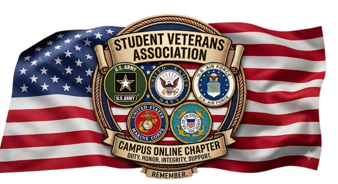

Veteran Resources
Essential links and portals for benefits, military records, and official assistance:

The Student Veterans Association is dedicated to supporting military veterans, service members, and military-connected students by providing resources, advocacy, and a strong peer network on campus and beyond.
We have several events planned for the upcoming months to support and connect our veterans. Stay tuned for dates and details!
Essential links and portals for benefits, military records, and official assistance:
Community outreach programs and local services dedicated to supporting our veteran population: